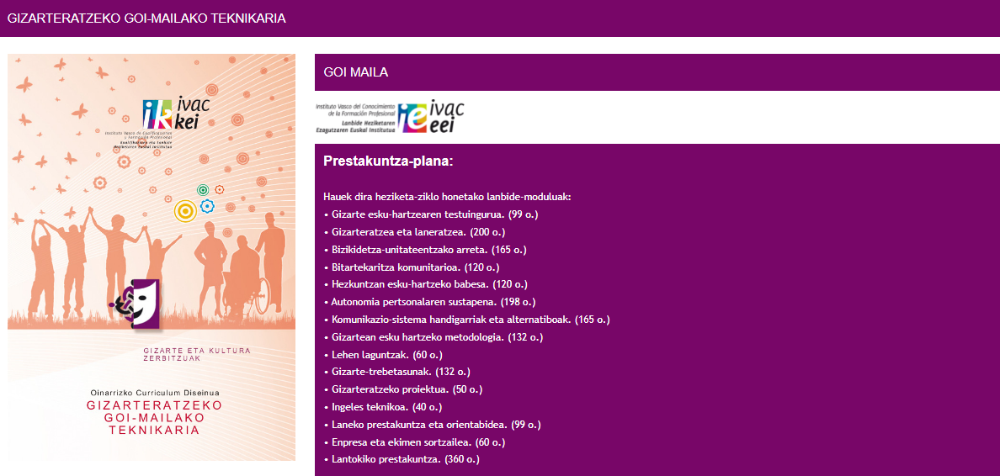

Ikasketen iraupena:
2000 ordu.
Zer ikasiko eta egingo dut?
- Gizarteratzeko jarduerak programatzea, baliabide eta estrategia metodologiko egokienak aplikatuta.
- Etxeko indarkeria prebenitzeko jarduerak diseinatu eta ezartzea, eta horien garapena ebaluatzea.
- Behar fisikoei eta psikosozialei arreta emateko jarduerak diseinatzea, erabiltzaileen ezaugarrien eta
testuinguruaren arabera, eta horien garapena kontrolatzea eta ebaluatzea.
- Etxeko kudeaketari laguntzeko jarduerak bizikidetza-unitatearen ezaugarrien arabera antolatzea, horien
garapena
kontrolatuz eta ebaluatuz.
- Laguntza psikosozialeko jarduerak antolatzea eta ezartzea, pertsonen intimitatearekiko errespetuzko jarrera
erakutsiz eta horien garapena ebaluatuz.
- Autonomia pertsonaleko eta sozialeko trebetasunetan entrenatzeko jarduerak antolatzea eta inplementatzea, eta
lortutako emaitzak ebaluatzea.
- Laneratzeko eta laneratzeko programak antolatu eta ezartzea, programa horien garapena eta aurrez ezarritako
ibilbidera egokitzen diren ebaluatuta.
- Komunikazio-trebetasunetan trebatzea, sistema alternatiboak edo handigarriak erabiliz eta erabiltzaileak
sistema
horien erabileran motibatuz.
- Pertsonen eta taldeen arteko bitartekaritza-lanak egitea, parte hartzeko eta gatazkak kudeatzeko teknikak
eraginkortasunez aplikatuta.
- Erabiltzaileekin eta haien familiekin, lantaldeko kideekin eta beste profesional batzuekin harreman arinak
izatea, trebetasun sozialak erakutsiz eta sortzen diren gatazkei irtenbideak emanez.